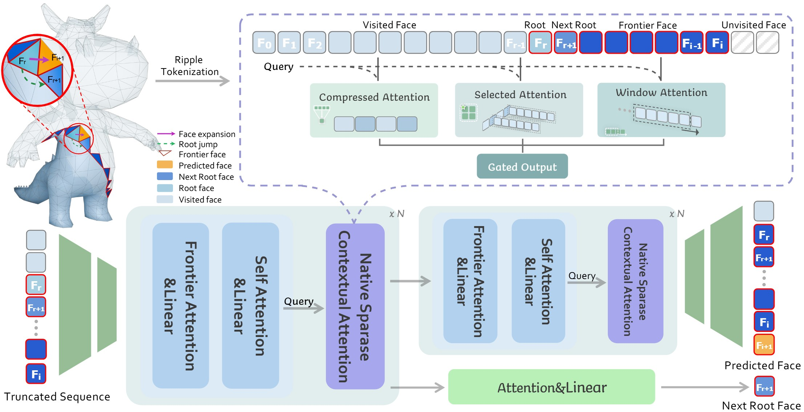
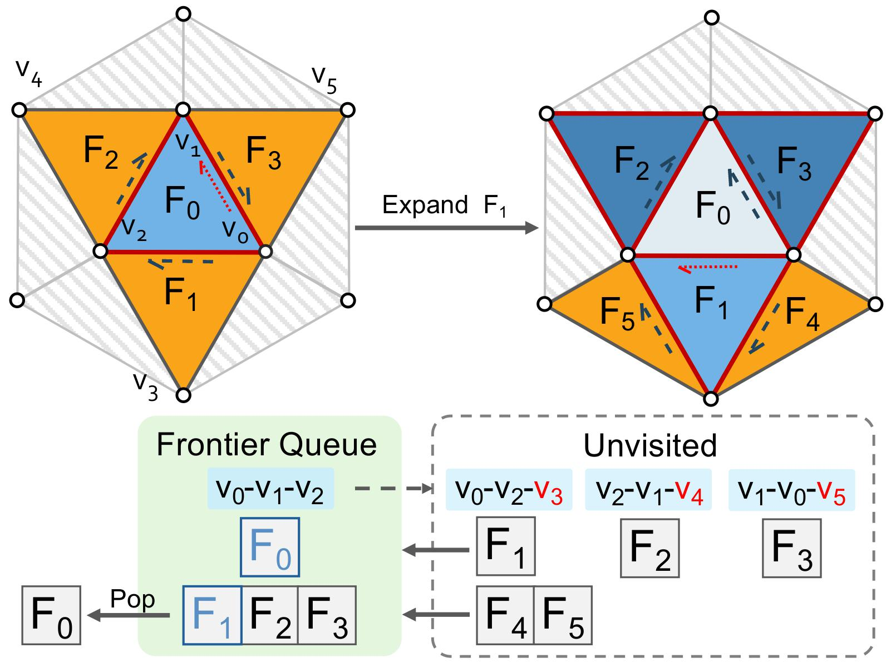
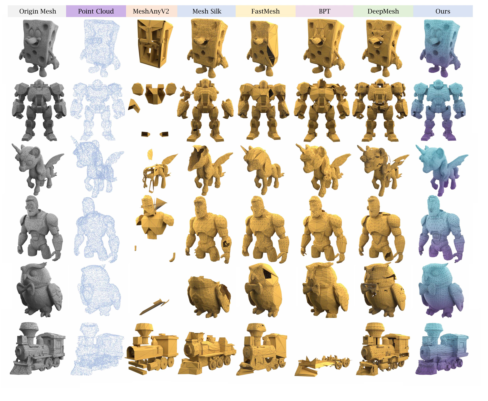

Meshes serve as a primary representation for 3D assets. Autoregressive mesh generators serialize faces into sequences and train on truncated segments with sliding-window inference to cope with memory limits. However, this mismatch breaks long-range geometric dependencies, producing holes and fragmented components. To address this critical limitation, we introduce MeshRipple, which expands a mesh outward from an active generation frontier, akin to a ripple on a surface.
MeshRipple rests on three key innovations: a frontier-aware BFS tokenization that aligns the generation order with surface topology; an expansive prediction strategy that maintains coherent, connected surface growth; and a sparse-attention global memory that provides an effectively unbounded receptive field to resolve long-range topological dependencies. This integrated design enables MeshRipple to generate meshes with high surface fidelity and topological completeness, outperforming strong recent baselines.

Fig. Overview of MeshRipple. The input mesh is first serialized into a token sequence via Ripple Tokenization, which is then truncated into fixed-length segments as input to a structured autoregressive model. The model employs hourglass layers at both ends to convert between vertex and face tokens. The core consists of a stack of 2 × N identical blocks, each comprising a Frontier-Attention layer, a self-attention layer, a cross-attention layer for point-cloud conditioning (omitted for clarity), and a Native Sparse Contextual Attention layer that attends to the full mesh sequence under a causal mask. The middle hidden states are additionally fed into a lightweight head to predict the next root face to expand.
Our framework aims to generate large, structurally coherent artist-style meshes under truncated autoregressive (AR) training. It consists of two key components: (i) Ripple Tokenization, which couples a breadth-first face ordering with an explicit dynamically maintained frontier, such that the structurally relevant context for the next face prediction is concentrated near the tail of the sequence; and (ii) an structured autoregressive transformer with frontier attention and a lightweight context attention that jointly predicts the next face attached to current root face, and the subsequent root face on the frontier to expand.

Illustration of Ripple Tokenization. At each step, the current root face expands following the counterclockwise half-edge order. Faces that still have unvisited neighbors remain in the FIFO frontier queue; once all neighbors are visited, the face is popped from the queue.

Qualitative comparison of point cloud-conditioned generation between MeshRipple and baselines. Baselines inevitably produce broken surfaces and holes, whereas MeshRipple yields more complete and coherent geometries.